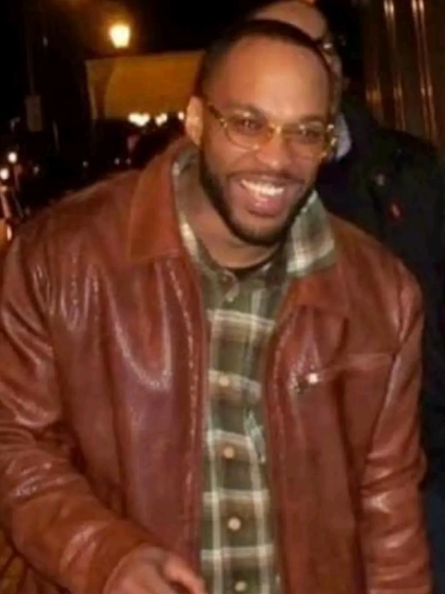

At 8:36 p.m. on Wednesday, October 12, 2011, a Cincinnati District Four officer was flagged down at 2600 Jefferson Avenue by a man who said the front-seat passenger in his vehicle had been shot. Firefighters arrived, but the passenger, Evan Bradley "Butch" McCray, 29, had died. Investigators determined he had been shot at 2218 Rice Street in Mount Auburn. No one has been charged.
He was a father of two and engaged to be married, and his family held services in both Cincinnati and Cleveland. The Attorney General's summary, written by the Cincinnati Police Homicide Unit, says there was "no suspect information to release." The driver who flagged down police is the one person known to have been with him at the moment of the shooting.
Editorial assessment of public sources, not a finding of fact. Nobody named here has been charged unless this page says so.
Details come from the Ohio Attorney General listing (case 642), which carries the Cincinnati Police summary, and his obituary (Nov 2011). CityBeat describes Rice Street. We found no 2011 news story we could open.
Evan Bradley McCray is born, per the Attorney General listing. Family and friends call him "Butch."
He is shot while riding in the front passenger seat of a vehicle. Investigators later place the shooting at 2218 Rice Street, a residential street in Mount Auburn.
The driver flags down a District Four officer at 2600 Jefferson Avenue and reports that his passenger has been shot. Fire personnel respond; McCray has died.
The Cincinnati Police Homicide Unit says it has no suspect information to release and will keep investigating.
His funeral is held in Cincinnati.
A second service is held in Cleveland, where he had family.
Cincinnati police and Hamilton County leaders launch a cold case task force. We do not know whether it has reviewed this case.
The Ohio Attorney General lists the case as unsolved homicide 642.
A 29-year-old father of two.

Photo provided by Evan's family. Removal or credit requests: use the contact form below.
DiedBorn April 11, 1982. A father of two who was engaged to be married, per his obituary, with family in Cincinnati and Cleveland. A friend wrote in his online guest book that his spirit was "calm and gentle." We do not name his living relatives.
Each photo is credited under the picture. Family members or others who want a photo added, changed, or removed can use the contact form at the bottom of this page.
What exists, and what each piece may or may not mean.
| Item | What is known | Disputed or unknown |
|---|---|---|
| Where he was shot | 2218 Rice Street, Mount Auburn (police, via the AG listing). | Whether the car was parked, stopping or passing: not public. |
| His position | Front passenger seat. | Which side the shots came from, and how many: not public. |
| The driver | Drove to 2600 Jefferson Avenue and flagged down an officer. | The driver's account, and whether the driver was hurt: not public. The driver has not been named, and we do not name him. |
| Time | Reported at 8:36 p.m. | The exact time of the shooting: not public. |
| Suspects | "No suspect information to release" (Cincinnati Police). | Unknown. |
| Motive | Nothing published. | Unknown. |
The Ohio Attorney General listing (with the police summary) and his obituary are the public record we could reach. The Cincinnati police file is not public.
| Document | Holder | What it shows | Access |
|---|---|---|---|
| Ohio AG: Evan McCray (case 642) | Ohio Attorney General | Police summary: time, both locations, passenger seat; photos. | Online, free |
| Obituary (Nov 18, 2011) | Legacy.com | Full name, nickname, family, services. | Online, free |
| 2011 news coverage | Cincinnati Enquirer and local TV | Initial reports; not found by our tools. | Not located |
| Cincinnati Police homicide file, vehicle exam and autopsy | Cincinnati Police; Hamilton County Coroner | The investigation. | Withheld or sealed |
Access labels: Online, free = we could open it. Fan-hosted copy = a private researcher posted scans; originals are held by the named agency, and we cannot vouch for completeness. Quoted in news = reporters read it; we did not see the document itself. Request needed = held by an agency or court. Withheld = the holder has not released it. We cannot reach non-public records, and we do not try to.
Where people talk about this case online, and how to read it.
| Platform | Live search | What you tend to find |
|---|---|---|
| Google: Reddit | site:reddit.com search | Public Reddit threads that Google has indexed, including old discussions. |
| Google: X and Twitter | X and Twitter posts | Public posts and profiles that appear in search results. |
| Google: Facebook | Public Facebook pages and posts | Only public pages and groups that Google can see. Private groups never appear. |
| Google: Instagram and TikTok | Instagram and TikTok | Public posts, memorials, and videos. |
| Google: forums | Forums and message boards | Long-running true-crime forums. |
| Google News | Latest news | Newest reporting, which is usually more reliable than posts. |
| Search Reddit | Long discussion threads and theories, often by amateur researchers. No sign-in needed to read. | |
| X (Twitter) | Search X | Short posts, news links, and anniversary notes. May require sign-in. |
| Search Facebook | Public groups and family or community pages. Requires sign-in. | |
| Search #evanmccray | Memorial and true-crime posts. Requires sign-in. | |
| YouTube | Search YouTube | Documentaries, news clips, and interviews. Quality varies widely. |
Be careful with online theories. Naming a private person as a suspect can harm an innocent family, and many "identifications" on forums have been wrong. Our own tools could not read these platforms: Reddit blocks automated access, and the others require an account. The Google searches above work from your browser. To get new public mentions by email, make a free Google Alert for the case name in quotation marks.
What local and national reports say, and when we last checked for a solution.
| Date | Outlet | What it reported | Link |
|---|---|---|---|
| Nov 18, 2011 | Legacy.com (obituary) | Obituary; services in Cincinnati and Cleveland. | Read |
| Current | Ohio AG | Listed as unsolved homicide 642; police summary. | Read |
Status is re-checked on a regular schedule. If you know of a development we missed, use the clue form near the top of this page or the contact form, and include a link.
No suspect has been publicly named.
Why named: Someone shot into the vehicle on Rice Street.
Against: No name, description, vehicle or direction of travel has been released.
Where a card shows a silhouette, we found no photo. Anyone who wants a photo added, changed, or removed can use the contact form at the bottom of this page.
The only official account is the police summary on the Attorney General's listing.
We put the chance that the shooting was aimed at the car's occupants, rather than random, at roughly 65%, because it happened at a specific address on a quiet residential street. We put the chance of a charge within five years at roughly 7%, because no suspect information has ever been released.
Editorial judgment, not statistics.
"—" means no public information, not a clean result.
| Person or idea | At the scene | Physical link | Legal outcome |
|---|---|---|---|
| Unidentified shooter | ✓ per police | — none published | — unidentified |
| Someone at or near 2218 Rice St. | ? unknown | — | — |
✗ excluded or contradicted · ✓ supports · ? disputed · — nothing public. No cell is an official finding.
Editorial reading of public records. A working theory, not a finding, and it names no individual.
Judgment, not statistics.
Questions raised by gaps in the public record.
Who lived at or was visiting 2218 Rice Street.
What he saw and heard, and the shooter's direction.
How many, and from which side of the car.
The path from Rice Street to Jefferson Avenue, and any cameras along it.
Whether the gun turns up in other cases (NIBIN).
"Not public" means we could not find a report.
| Item | Tested | Gap |
|---|---|---|
| Autopsy | Done in 2011. | Not public. |
| The vehicle | Unknown. | Bullet holes and trajectory: not public. |
| Ballistics | Unknown. | Not public. |
| Police file | Cincinnati Police. | Public index: not available. |
| Tool | What it could do | Status here |
|---|---|---|
| DNA from retained evidence | Identify a donor or exclude people. | Unknown; not reported |
| Forensic genetic genealogy | Identify an unknown donor from relatives. | Needs usable DNA; none reported |
| Ballistics database (NIBIN) | Link recovered casings or bullets to other crimes. | Not reported |
Local cases that moved after decades.
Investigators say a private genealogy investigation helped them identify Thomas Dunaway, who died in 1990, as the man who killed the 16-year-old. He cannot be indicted, so prosecutors sent a letter saying he would have been charged. The lesson: genealogy can name a killer after decades, even when no trial is possible.
In 2024, local investigators were being trained in the technique, which has already helped solve Cincinnati-area cases, according to FOX19. The lesson: the tool is now local, so cases with usable DNA have a real path forward.
Old crime-scene DNA matched relatives in a public database and led to a 2018 arrest. The lesson: a usable sample can still work after decades.
Case details come from public news coverage and the Boone County Sheriff's cold-case list. Confirm in court records.
| Claim | Source and date | Where it stands |
|---|---|---|
| Samuel DuBose (2015) | CityBeat | A University of Cincinnati officer shot Samuel DuBose during a traffic stop on Rice Street in 2015. It is an unrelated case, four years later. |
| Marlon McCray | Search results | An Enquirer page lists a Marlon McCray shot in Kennedy Heights; it is a different person and place. |
| Other McCrays | Search results | A UAB football player named Evan McCray and the convicted Buffalo gunman Riccardo McCray are different people. |
He was shot at 2218 Rice Street in Mount Auburn, a hillside neighborhood between Over-the-Rhine and the University of Cincinnati. The driver flagged down police at 2600 Jefferson Avenue.
Open in maps: Rice St., Mount Auburn. We show no photograph of the scene.
| Source | Type | Rating | Use with care because |
|---|---|---|---|
| Ohio Attorney General listing, case 642 | Agency (police summary) | A | Opened; time, both locations, passenger seat, photos. |
| Obituary, Nov 18, 2011 (Legacy.com) | Obituary | B | Opened; full name, nickname, family, services. |
| CityBeat, "On Rice Street" (2016) | Local news | B | Opened; the street and neighborhood; does not mention him. |
| 2011 news coverage | Local TV and the Enquirer | n/a | Not found by our tools. |
513-352-3542.
513-352-3040; tips can be anonymous.
Charging decisions.
Under the Ohio Public Records Act, I request copies of non-exempt records relating to the October 12, 2011 shooting death of Evan Bradley McCray, 29, at 2218 Rice Street, Cincinnati, including incident reports, laboratory reports, and any evidence inventory. Please send electronic copies. If any part is withheld, please identify the exemption relied on and release all reasonably segregable material.
Agencies often withhold records of open investigations, so expect partial answers.
Evan was 29, a father of two, and engaged. His family held services in Cincinnati and Cleveland, and provided the photo on this page. We would welcome any statement they wish to share.
Loading headlines…
Every fact on this page comes from one of these. Where they disagree, we say so above.
The only official account is the police summary on the Attorney General's listing. We could not find or open any 2011 news report. The driver is not named in any source and is treated here as a witness. Family details come from his obituary; we do not name living relatives. His photo was provided by his family; the Ohio Attorney General listing has two more. We found no reward and no arrest.